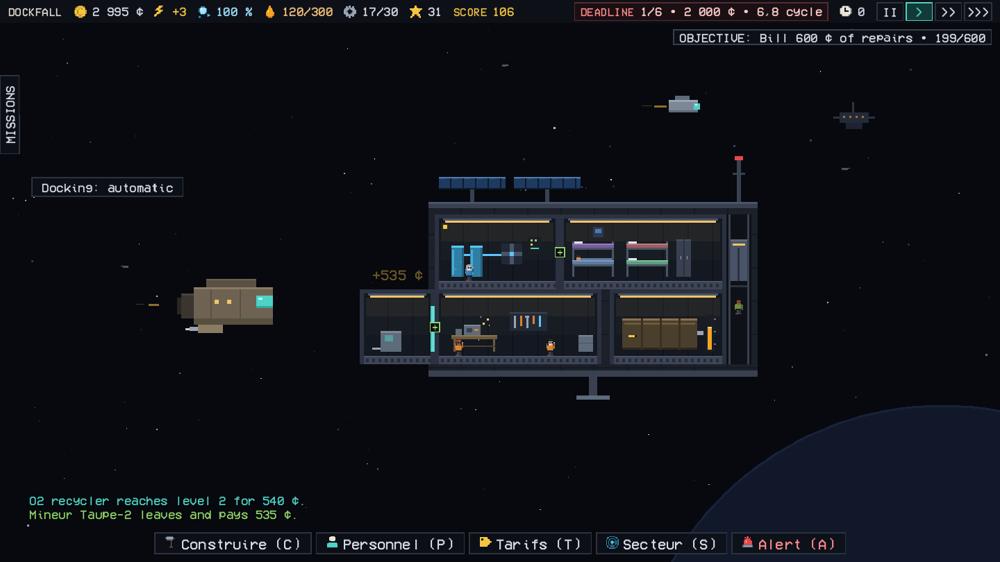
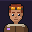
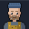
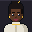
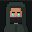
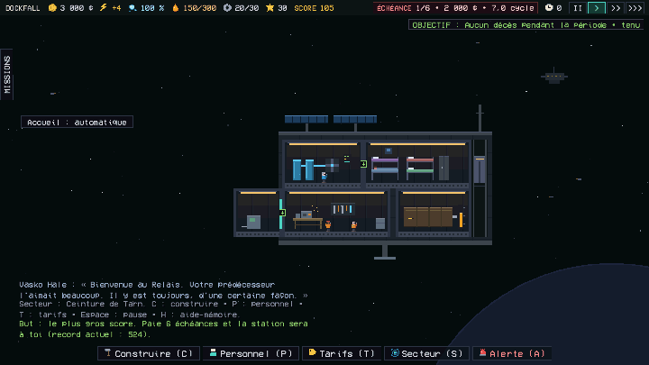

Free game • space station management • roguelite • pixel art • Windows
A station.
A debt.
A record to beat.
You take over the Relay, a refueling station lost in the belt, and the debt that comes with it. Refuel ships, repair their hulls, keep your crew alive and pay the Company. Buy the station after six deadlines, then carry on as owner: the goal is the highest score.
DEADLINE 1/6 • 2,000 ¢ • 7.0 cycles


What you do at the Relay
Sell at the right price
Every ship pays for docking, fuel, repairs, trade and care at the price you set, down to the credit. Too expensive and it heads to Vega, the counter across the way. Too cheap and you work for nothing.
Build and upgrade
Docks, workshop, oxygen recycler, quarters, market, security post, reactor… Grow the station floor by floor and upgrade each module up to level 3. Keep an eye on energy: during a shortage, modules shut down.
Run a crew
Humans, Velkans, Ossarites, Thuuls: each has a job, a personality and a rarity, from common to legendary. They get tired, lose morale, and sometimes get poached by Vega.
Take the hits
A fire spreads through the workshop, three pirates come aboard, an inspector searches your holds. You send the crew, sound the alert, negotiate. And between two crises, Vasko Hale drops by to ask how your till is doing.
“Every station falls eventually. Yours can choose when.”Vasko Hale • the Company
Who you'll meet





In motion

Spread the word
The game is free and made by a tiny team: every share really counts.
Press kit • for journalists, video creators and streamers
- Title
- Dockfall
- Genre
- Space station management, roguelite
- Platform
- Windows 10 and 11
- Price
- Free
- Languages
- English, French
- Engine
- Godot 4
- Version
- Prototype 0.16
- Website
- dockfall.netlify.app
Dockfall is a pixel-art roguelite management game: you take over a refueling space station deep in debt and must pay the Company, deadline after deadline.
Refuel and repair ships at the prices you set, build and upgrade the station's modules, hire a crew of four species and keep them alive through fires, pirates and inspectors. After six deadlines the station is yours: carry on as owner and aim for the highest score on the world leaderboard. Every run is different: three sectors, three starting stations, conditions, challenges, a daily concession and a mystery to uncover, the former manager's journal.
Images and animation, free to use to talk about the game: GIF • station.png • incendie.png • abordage.png • voisinage.png • equipe.png • victoire.png • station_art.png • icone.png


You may show, record and monetize videos of Dockfall without asking.
Download
Dockfall for Windows
The game is a single file, no installation needed. Your run is saved at the end of every cycle and when you quit. When a new version comes out, an “Update” button appears in the menu and the game updates itself.
- Version
- Prototype 0.16
- System
- Windows 10 or 11, 64-bit
- File
- Dockfall-windows.zip • about 50 MB
- Languages
- English, French
- Price
- Free
Install and play
- Unzip the archive wherever you like (right click, Extract All). Avoid
Program Files: the game needs to be able to update itself. - Run
Dockfall.exe. - If Windows shows “Windows protected your PC”, click More info then Run anyway. The game isn't signed yet, hence the warning.
- Choose New concession. The tutorial guides you through your first run. The language can be changed in Options.
Save and settings: %APPDATA%\Godot\app_userdata\Dockfall. Delete this folder to start from scratch (licences and achievements included).
Privacy: at the end of a run, the game sends an anonymous summary of the run (length, how it ended, what was built, key moments from the logbook, menus used) to help improve it; you can turn this off in Options. The leaderboard only uses the nickname you choose. No personal data is collected.
Recommended specs
| Component | Minimum |
|---|---|
| Processor | Dual core, 2 GHz |
| Memory | 2 GB |
| Graphics | Vulkan or OpenGL 3.3 compatible |
| Screen | 1280 × 720 or more (windowed, or fullscreen with F11) |
| Disk space | 150 MB |
World leaderboard
The longest concessions
The longest run wins, in cycles, then the best score. Each player keeps their best run. To appear here, pick a nickname in the game (Leaderboard menu, or at the end of a run): your finished runs are sent automatically.
Loading the leaderboard…
| Rank | Nickname | Cycles | Score | Sector | Threat |
|---|
Daily concession •
The same start for everyone today (“Daily concession” in the game menu). Only each player’s first run counts.
Loading…
| Rank | Nickname | Cycles | Score | Sector | Threat |
|---|
Screenshots
The Relay in pictures
Every image comes straight from the game. Click to enlarge. Some screenshots show the French version.
News
Version history
0.11 – 0.16
November 2026
- Daily concession: the same start for everyone, with its own leaderboard.
- Faster download and a fixed main menu (the quote no longer covers the buttons).
- Sharing: a button at the end of a run copies your score and the game link; press kit and share buttons on the website.
- Run summaries: along with the anonymous stats, a short summary of every run (even abandoned ones) to spot what gets players stuck and what the game is missing.
- The Relay mystery: eight fragments of Elias Varn’s journal, the former manager, to discover by playing and reread in the Archives menu.
- Crew reactions: small icons above heads (alert, nickname, friendship, mourning).
- Crew stories: nicknames earned through feats, friendships, a memorial, and a logbook for every run.
- Give feedback: from the pause menu or the end screen, write directly to the team.
- Anonymous end-of-run statistics to balance the game (can be turned off in Options).
0.10
November 2026
- English version: the whole game is translated. Choose the language in Options; by default, French if Windows is in French, English otherwise.
0.9
November 2026
- Visible earnings: each payment rises above the dock, in gold for big amounts.
- End-of-run chart: your till cycle by cycle, with paid and missed deadlines.
0.8
November 2026
- 9 new licences (19 in total): working capital, recruitment office, lawyer, negotiator, address book, urban planner, veterans, expanded crew, reprieve.
- 4 challenges to pick before a run: Green energy, Skeleton crew, Lone wolf, Empty till. More score, and 3 licences on the first success.
0.7
November 2026
- Major projects (O key): beacon, residential wing, shield, shipyard, guild headquarters. Big works with a permanent effect, worth score.
- Late-game threats: blockade, great raid, major storm and the Company's buyout offer.
0.6
November 2026
- Starting stations: the Relay, the Wreck (worn but rich) and the Outpost (military), unlocked with licences.
- Concession conditions: a perk and a drawback drawn each run, redrawable once.
0.5
November 2026
- Adjacency: module placement matters. Workshop next to a dock, market next to the warehouse, canteen, infirmary or recycler near the quarters, security near a dock: each pair gives a bonus. The reactor heats its neighbors.
- Staff stats renamed Work, Stamina and Morale, shown as even squares.
0.4
November 2026
- World leaderboard: the longest run wins. Pick a nickname in the game; finished runs are sent automatically.
- Automatic updates: when a new version comes out, an “Update” button appears in the menu. One click and the game downloads, checks, replaces and restarts itself. Save and licences are kept.
0.3
November 2026
- The goal is the score. It's shown live at the top of the screen, and the end screen announces new records.
- Owner mode. After buying the station, the run goes on: a sector tax replaces the deadlines, licences are bought with credits, and you retire whenever you want.
- Staff stats: rarity now comes from their total, instead of being random.
0.2
November 2026
- The buyout, Threat levels 1 to 5, achievements, a quick guide (H key) and remappable keys.
- Missions, module upgrades, live crises (spreading fires, boarding pirates), staff rarities and alien employees.
0.1
November 2026
- First playable prototype: cross-section station, ships, prices, staff, energy and oxygen, Company deadlines, choice events, licences, autosave, tutorial, music and sound.